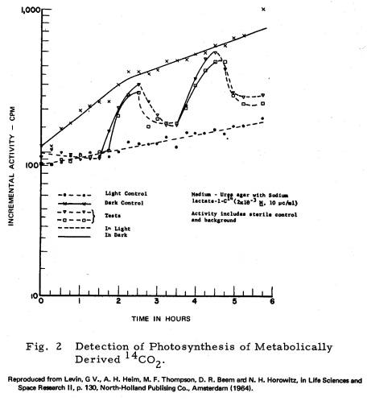

Reprinted from Exobiology, Vol. 19, Science and Technology Series, 1969,
a publication of the American Astronautical Society, Publications Office,
P.O. Box 746, Tarzana,
California 91356
AUTOMATED MICROBIAL
METABOLISM LABORATORY
Gilbert V. Levin
Six experiments to detect extraterrestrial life through measuring metabolism and growth in planetary surface material are being integrated into a single automated laboratory. The experiments monitor uptake of radioactive substrates, photosynthesis of metabolically derived radioactive carbon dioxide, photosynthesis through fixation and endogenous respiratory release of labeled gaseous carbon dioxide, uptake of phosphate from solution, incorporation of labeled sulfate, and the presence and production of adenosinetriphosphate. Each of the experiments will consist of a test and inhibited control. The principal sensor(s) will be a shared radiation detector and/or a photomultiplier tube. Secondary sensors will measure pH, temperature and oxygen in the culture. The sensors will also be used to measure background radiation, ambient light intensity, surface pH, atmospheric oxygen, soluble phosphate in the surface material and ambient temperature at the solid-atmospheric interface of the planet. Experimental data obtained in the laboratory and in the field are presented.
Dr. Sagan has discussed two of three possible methods of assessing the phenomenon of life on other planets. First, he suggests that we might examine the physical environment to see if it could sustain life. While helpful, I’m afraid this technique is fraught with danger. Secondly, Dr. Sagan would seek tell-tale indications of life. Both of these approaches rely on the technique of remote sensing. It is my belief that remote sensing techniques for discovery of life are at an inherent disadvantage when compared to the “ferret approach,” or in situ analysis, mentioned thirdly by Dr. Sagan. It is this last approach that he has left to me.
I want to discuss several planetary life detection methods my coworkers and I have developed. These methods are directed towards the detection of microorganisms in the belief that they are the most likely forms of extraterrestrial planetary life. Fortunately, they are also the most easily acquired for testing on an alien planet. The methods seek function rather than form. That function is metabolism, generally detected by monitoring some life-suggesting interaction between the organisms and simple compounds present in the environment. In combination, the several experiments examine the organisms through a number of different “metabolic windows.” The individual experiments are biologically and physically compatible for integration into our “Automated Microbial Metabolism Laboratory.” This laboratory might serve as the biological payload for a small planetary lander, or as a subsystem aboard a much larger lander that would include a complete biological, physical and chemical laboratory.
All techniques stress rapidity and sensitivity. This is important because of the uncertain operating period of a space capsule landed in a hostile environment after a lengthy trip through space. The first such detection method is the experiment named “Gulliver.” It seeks to detect microorganisms by offering them substrates labeled with radioisotopes and monitoring the “culture” for the evolution of radioactive gas. The experiment is based on two presumptions: a) that the life would be carbon-based, and b) that its biochemical reactions would take place in aqueous solutions. Both are logical assumptions for the start of the search for extraterrestrial life.
The essential development in the Gulliver technique has been the designing of media which are non-specific for terrestrial life, unfortunately the only kind of life available for testing these media. One such medium is a simple inorganic salt solution plus that magic ingredient, “soil extract.” A second medium is more complicated, containing dilute solutions of complex organic materials and soil extract. Both media support growth of a wide variety of terrestrial microorganisms: aerobes, anaerobes, chemotrophs, phototrophs, bacteria, protozoa, streptomycetes, and algae. An automated instrument to conduct the experiment has been developed and tested in severe terrestrial environments, in moderate natural environments and in the laboratory. On White Mountain, California, for example, on an apparently barren slope (in the middle of a snow storm) the instrument performed and detected microorganisms in 50 minutes. Approximately the same time span produced successful responses on the floor of a sand dune in Death Valley and on the salt flats around the Salton Sea, California. The method is responsive to as few as 10 to 100 microorganisms within a period of several hours. Fig. 1 shows the current instrumentation. This is a “throw away” single-use experimental instrument, the so-called “Mark IV,” in situ, version of Gulliver. It is approximately 3 inches long, 1½ inches in diameter and weighs about 3 ounces. A number of these units could be packed into a planetary lander and ejected onto the planetary surface. The instrument is self-righting. It contains the radioisotopic medium, a high voltage power supply, an amplifier, a geiger tube, and a heater to prevent freezing of the medium. The instrument operates by: landing, erecting itself, breaking an ampoule containing the medium, distributing the liquid to the surface beneath the instrument and then measuring the amount of radioactive gas produced. There is an umbilical cord which supplies low voltage from the spacecraft and receives the data from the instrument for transmission to Earth.
While Gulliver has been successful in detecting heterotrophic life, many biologists agree that the first form of life to evolve must be phototrophic, and that phototrophs would exist on any planet harboring life. Accordingly, we modified the experiment to monitor for activity of photosynthetic organisms which can also assimilate substrates heterotrophically. Labeled formate, glycine, lactate and glucose were used as the substrates. These are some of the compounds produced in the Miller-Urey type of reaction which seeks to simulate the early Earth’s atmospheric production of compounds of biological interest. Carbon-labeled substrates offered to the alga, Chlorella, can be assimilated with the production of CO2 in the dark. In light, the CO2 is fixed within the organisms as seen in Fig. 2. When the light is on, there is very little production of CO2. When the light is excluded, evolution of CO2 occurs within a few minutes.
The next step was to develop an experiment in which a strict phototroph might be detected. This was done by supplying radioactive carbon dioxide directly to the microorganisms in the presence of light. If photosynthetic, the organism should fix some of the carbon dioxide. Excess gaseous carbon dioxide is swept away and replaced by the planetary atmosphere. The light is extinguished and the culture is monitored for the production of labeled carbon dioxide. The latter would be derived by metabolism of the energy compounds formed during the photosynthetic process. Results of such an experiment are shown in Table 1.

Another experiment seeks to detect adenosinetriphosphate (ATP) as evidence of life. On Earth, all living cells contain ATP which is a mediator of all biological reactions. The ingredients of the firefly lantern can be used as an assay for ATP. The firefly lantern contains an enzyme: “luciferase,” a substrate: “luciferin,” some magnesium and oxygen. When the firefly supplies ATP to this combination, light is produced. The ingredients can be extracted from the lantern and the reaction produced in the laboratory by the addition of ATP. The reaction is specific for ATP and the intensity of light emitted is proportional to the quantity of ATP, provided the other reactants are supplied in excess. In this fashion, an unknown, such as a sample of planetary matter, may be examined for ATP. Thus, the experiment, named “Diogenes,” looks for an intermediately complex biochemical compound, ATP, with a molecular weight of about 500. The mere presence of this material on another planet would be of great interest to biologists regardless of whether the ATP had been produced biologically or abiologically. However, it becomes a life detection scheme when we compare the amount of ATP present at time 0 in a culture with the amount present at some later time. Fig. 3 shows a typical reaction obtained with the ATP experiment as recorded photographically from an oscillioscope.
The time of the reaction is approximately half a second, the total operation takes less than two minutes. Fig. 4 shows a bread-board prototype of an instrument capable of performing four ATP assays within a two-minute period during rocket flight. The data would be transmitted by radio, making it possible to measure airborne microorganisms in a manner avoiding the problem of recovery of the sample.
Microbial assay data obtained in the laboratory with the ATP method are shown in Table 2. It is interesting that the amount of ATP per cell is surprisingly uniform for all bacteria, ranging from 10-9 to 10-10 gamma per cell. As the species become larger, such as the yeast, Chlorella, or Tetrahymena, the amount of ATP increases, approximately proportionally. This feature makes possible the rapid determination of bacterial counts, if only bacteria are present, or the measurement of bio-mass in mixed cultures of various genera. Practical applications of the test, ranging from bio-mass determinations in the ocean to rapid detection of bacterial infections in man, are being developed.
Another method of looking for life revolves about the essential ion, phosphate. Inorganic orthophosphate is required by all terrestrial organisms and, because of the unique chemical properties of the phosphate trimer, phosphate is an excellent candidate for inclusion in any form of life - even life not based on carbon. We have developed a test to look for the uptake of phosphate by microorganisms. In order to maintain the compatibility of the experiments, this has been done with only a slight modification of the Gulliver medium. The amount of phosphate was reduced to permit the uptake of small quantities of that ion to be detected by measuring the decrease in the concentration of phosphate in the medium. Table 3 presents phosphate uptake data obtained with three different microorganisms.
The energetics required for cellular metabolism indicate that a good candidate to replace phosphate in some alien biology is the sulfate ion. Chemically, it is similar to phosphate, being able to form a resonant bond to store and transfer energy for biological reactions. Therefore, we have developed a sulfate uptake experiment. Analyzing for sulfate uptake, fortunately, is easier than analyzing for phosphate uptake. The half-life of 35S is sufficiently long for radioactive sulfur to survive the 8-month trip to Mars. Thus, we can use 35SO4 and look for uptake by direct measurement of radioactivity of the microorganisms. Radio-sulfate uptake data are given in Table 4.
The ATP, phosphate and sulfate experiments reported above were performed with pure cultures. To investigate possible interference problems, we also examined natural soils by these techniques. Table 5 presents data on the uptake of radioactive sulfur in clays of local (Washington, D.C. area) origin: one, a silty clay loam, the other, a lateritic clay.
In all these experiments, there were controls against which the tests were compared. For example, as radioactivity is evolved by the test unit of Gulliver, the control is an identical unit in which the culture has been poisoned, again basing this presumption on terrestrial biology. We compare the evolution of the gas from the test with the attenuated evolution of gas from the control as evidence for a biological and not a chemical reaction.
To demonstrate biological compatibility and inter-relationships, we performed some experiments simultaneously on the same sample. Table 6, for instance, shows the production of ATP and the uptake of orthophosphate. These phenomena are related because the ultimate source of the phosphorus phosphorylated into ATP is orthophosphate. The ATP content increased approximately 130-fold in 24 hours. During this same period, the phosphate fell to approximately one-third its original value. In the control, which was poisoned, the ATP nearly disappeared below the detectable level while no phosphate was taken up. The same pattern is seen in the lateritic clay. Such test and control data from Mars would offer unequivocal evidence of life.
It is our plan to develop an integrated instrument package of these several methods for detecting and examining life through individual, but related, metabolic windows. In effect, the experiments look at the interface between the suspected biological organisms and the environment. They seek the involvement of essential elements, of relatively simple compounds (with the exception of ATP which is moderately complex), and of light in the life process.
Called the “Automated Microbial Metabolism Laboratory,” the device will conduct the following experiments:
1. Gulliver - the assimilation of labeled substrate with the production of labeled gas,
2. Photosynthesis - the photosynthetic fixation of labeled CO2 produced by heterotrophic assimilation of labeled substrates,
3. Photosynthesis - the direct fixation of labeled carbon dioxide in the light and its subsequent release through endogenous respiration in the dark,
4. Diogenes - the determination of ATP and its production,
5. Phosphate uptake - metabolic removal of dissolved orthophosphate from solution,
6. Sulfate uptake - the incorporation of labeled sulfate.
It is hoped that all six experiments can operate simultaneously on the same sample, or on duplicate portions of the sample. Similarly, one or two portions of the sample would be used as controls. Attempts will be made to inhibit the metabolic activity of the controls through the use of antimetabolites or heat. It is planned to conduct the six experiments with only one or, at most, two prime sensors - a radiation counter and/or a photomultiplier tube. Accessory sensors will be incorporated to measure temperature, pH and oxygen in the cultures.
Dual use of all sensors will make possible the determination of the following physical parameters of the planetary surface:
1. Temperature,
2. Background radiation,
3. Atmospheric oxygen,
4. Surface material pH,
5. Dissolved phosphate in surface material,
6. Ambient light intensity.
It is our hope that the instrument can be put together in a package weighing about 15 pounds, occupying less than one-half cubic foot, requiring 10 watts maximum power and using less than 30 watt-minutes total energy for operation.
In concluding, I would like to emphasize that, while the data reported herein were obtained in experiments in which I was principal investigator, there were many other people and other institutions involved. I would particularly like to acknowledge help from Dr. Norman Horowitz, California Institute of Technology, my co-experimenter on Gulliver, and Dr. Norman MacLeod, Goddard Space Flight Center, my co-investigator on the “Diogenes” project. I would also like to acknowledge with thanks support from the Office of Space Science and Applications, Bioscience Programs, of NASA, and the Goddard Space Flight Center in the development of these experiments and associated instruments.